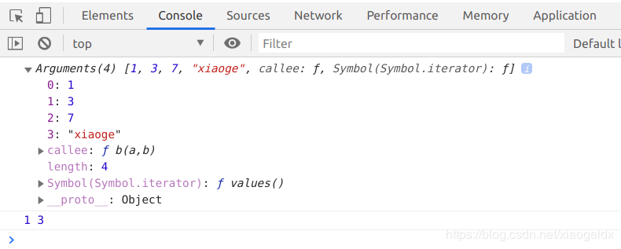
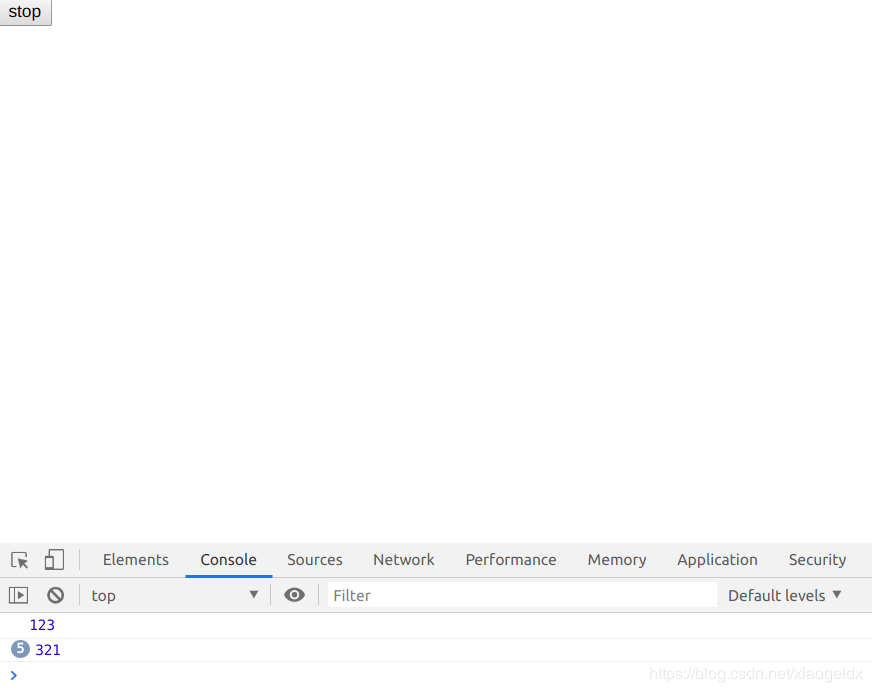

本文转载自：https://blog.csdn.net/xiaogeldx/article/details/85455011
random:随机数
document.write(Math.sqrt(16)+'<br>'); //开方 4
document.write(Math.abs(-1)+'<br>'); //绝对值 1
document.write(Math.PI*2+'<br>'); //π 6.28.....
document.write(Math.pow(2,3)+'<br>'); //x的y次方 8
document.write(Math.round(3.6)+'<br>'); //取整，四舍五入 4
document.write(Math.floor(3.2)+'<br>'); //向下取整 3
document.write(Math.ceil(3.2)+'<br>'); //向上取整 4
document.write(Math.max(1,34,23)+'<br>'); //最大值 34
document.write(Math.min(1,34,23)+'<br>'); //最小值 1
document.write(Math.random()+'<br>');//0-1之内的随机数
document.write(Math.random()*100+'<br>'); //0-100随机数 时间戳：格林威治时间1970年01月01日00时00分00秒（北京时间1970年01月01日08时00分00秒）起至现在的总秒数
var today = new Date();
document.write(today+'<br>');
//Mon Dec 31 2018 10:22:51 GMT+0800 (中国标准时间)
var year = today.getFullYear();
document.write(year+'<br>'); //2018
var month = today.getMonth()+1; // 从 Date 对象返回月份 (0 ~ 11)
document.write(month+'<br>'); //12
var day = today.getDay(); //从 Date 对象返回一周中的某一天 (0 ~ 6)
document.write(day+'<br>'); //1周一
var day1 = today.getDate(); //
document.write(day1+'<br>'); //31三十一号
var hour = today.getHours();
document.write(hour+'<br>'); //10(时)
var minute = today.getMinutes();
document.write(minute+'<br>'); //34(分)
var second = today.getSeconds();
document.write(second+'<br>'); //10(秒)
document.write(year+'/'+month+'/'+day1+'/'+hour+':'+minute+':'+second)
// 2018/12/31/10:37:14
document.write(Date.now()) //1546224045934(ms)匿名函数
function add(参数) {
alert("我被调用了！");
} //后面不用;结尾
add() //调用
var box = document.getElementsByTagName("div")[0];
box.onclick = function () {
alert("434");
}; //后面用;结尾
function ase(a) {
alert(a);
}
ase(222); function a() {
console.log(arguments);//固定用arguments
}
a(1,3,7,'xiaoge');function b(a,b) {
console.log(arguments);
console.log(a,b)
}
b(1,3,7,'xiaoge');

自执行
!function () {
document.write("w"+"<br>")
}(); //w
+function () {
document.write("we"+"<br>")
}(); //we
-function () {
document.write("wer"+"<br>")
}(); //wer
(function () {
document.write("wert"+"<br>")
})(); //wert
(function () {
document.write("wertu"+"<br>")
}()); //wertu //var 是定义局部变量
var a = 100;
function func() {
var a = 200;
alert(a);
}
alert(a);
func();
alert(a) //100,200,100
//不用var是定义全局变量
var a = 100;
function func() {
a = 200;
alert(a);
}
alert(a);
func();
alert(a) //100,200,200清除定时器的时候要给定时器加个名字
<body>
<button>stop</button>
<script type="text/javascript">
setTimeout(function () {
console.log(123);
},2000); //两秒后执行一次，不再执行 2000ms,1s=1000ms
var a = setInterval(function () {
console.log(321);
},2000); //每两秒执行一次
var b = document.getElementsByTagName('button')[0];
b.onclick = function () {
clearInterval(a);
};
</script>
</body>